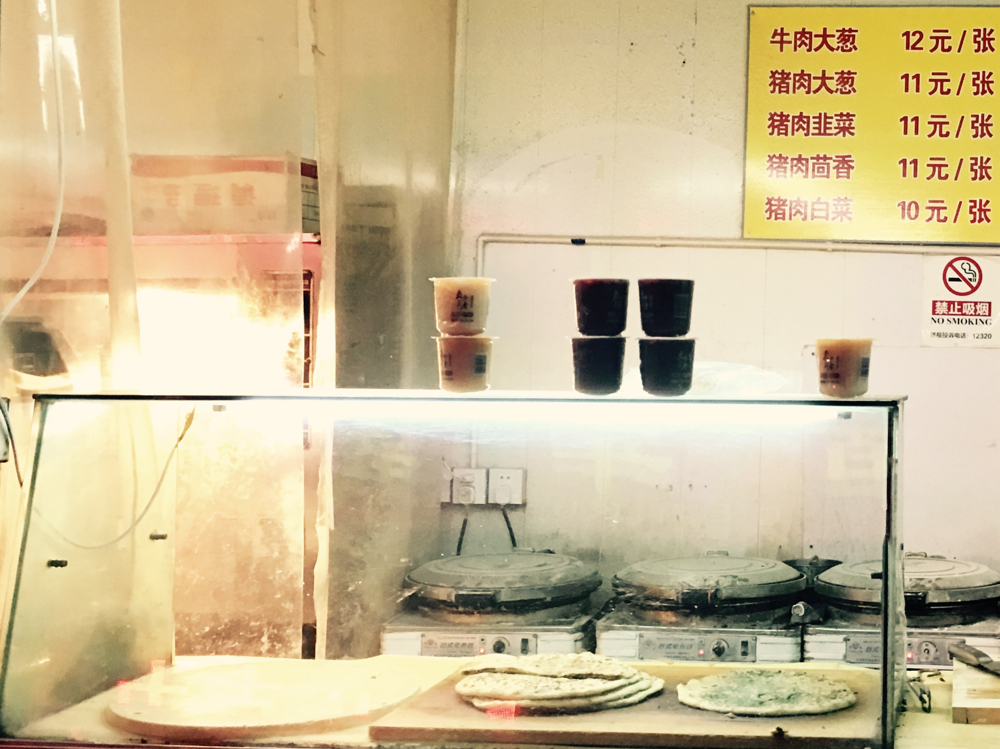

楼下超市外的商铺里，有一家开了很久的馅饼铺，卖馅饼、烙饼。
每到下班时间，这里就要排队，几个大电饼铛，滋滋冒着白烟，也无法满足顾客们的需求。“一张韭菜鸡蛋”，“两张牛肉大葱”的呼喊声络绎不绝，虽然要等会儿，但时间却不长，绝不会耗尽你的耐心。
排队到了，老板会把最上面一张烙饼掀起，拿下面的切，上面这张似乎一直用来保温用。
之后就是最好看的切饼了，老板一手菜刀，一手夹子，全程不用手。饼在菜刀和夹子之间旋转、翻滚，简洁的几刀解决战斗，一样大小的几角馅饼切好，装盒。
最后结账，老板用夹钱的夹子收钱、找钱。
每次来买饼都是一种享受，一个人，像机器一样精确运转。卖油翁、庖丁解牛、轮扁斫轮一个个匠人形象眼前立现
不过说到最后，还是要尝尝馅饼味道如何。
这家馅饼，皮很薄，但是刚出来的时候焦糊的地方很脆，吃起来不会有一嘴棉裤的感觉。韭菜鸡蛋的馅也不油，非常鲜。唯一的问题是，饼一旦凉了，再怎么热也不好吃了，饼皮也硬了。所以每次买馅饼都要掐算好喵妈回家的时间，要刚刚好，赶上好吃。
这第2次胰腺炎之后，恐怕也要和这类美食告别了，偶尔看看切饼，也是享受。
下一篇写写喵最近的游戏方式。